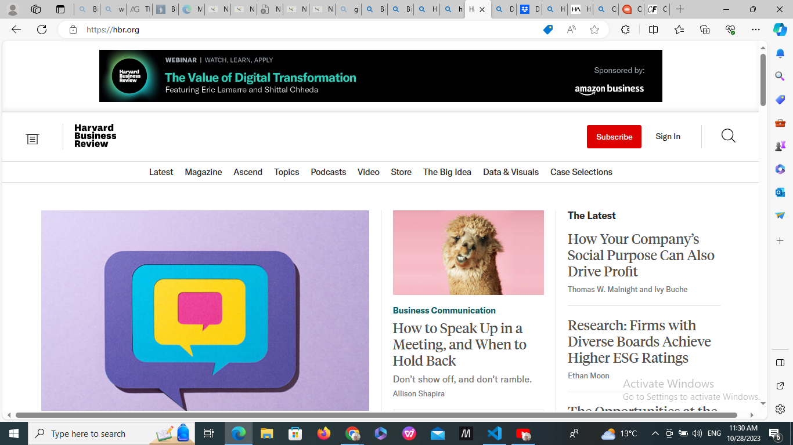

Visual Hierarchy
CAREERFOUNDRY
https://careerfoundry.com/Example description of how visual hierarchy is applied on the page. this will be added to the man
White Space and Clean Design
Ha Thong
https://www.hathong.com/
Example description of how white space and clean design are applied on the page. this will
Repetition
Harvard Business Review
https://hbr.org/
Example description of how repetition is applied on the page. iot is the